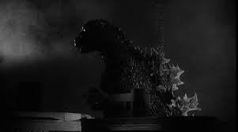

Godzilla ( japonês :ゴジラ, Hepburn : Gojira ) É um filme épico japonês de 1954 kaiju dirigido e coescrito por Ishirō Honda , com efeitos especiais de Eiji Tsuburaya . Produzido e distribuído pela Toho Co., Ltd. , é o primeiro filme da franquia Godzilla . O filme é estrelado por Akira Takarada , Momoko Kōchi , Akihiko Hirata e Takashi Shimura , com Haruo Nakajima e Katsumi Tezuka como Godzilla . No filme, as autoridades japonesas lidam com o súbito aparecimento de um monstro gigante, cujos ataques desencadeiam temores de holocausto nuclear no Japão do pós-guerra .
Godzilla entrou em produção após uma coprodução japonesa-indonésia fracassar. Tsuburaya propôs originalmente um polvo gigante antes que os cineastas decidissem por uma criatura inspirada em dinossauros . Godzilla foi pioneiro em uma forma de efeitos especiais chamada suitmation , na qual um dublê usando um traje interage com cenários em miniatura. A fotografia principal durou 51 dias, e a fotografia de efeitos especiais durou 71 dias.
Godzilla estreou em Nagoya em 27 de outubro de 1954 e recebeu um amplo lançamento no Japão em 3 de novembro. Foi recebido com críticas mistas após o lançamento, mas foi um sucesso de bilheteria, ganhando o Prêmio da Associação Japonesa de Cinema de Melhores Efeitos Especiais. O filme arrecadou ¥ 183 milhões em aluguéis de distribuidoras , tornando-se o oitavo filme japonês de maior bilheteria daquele ano . Em 1956, uma versão "americanizada" fortemente reeditada, intitulada Godzilla, King of the Monsters!, foi lançada nos Estados Unidos.
O filme gerou uma franquia multimídia que foi reconhecida pelo Guinness World Records como a franquia de filmes mais longa da história. O personagem Godzilla se tornou um ícone internacional da cultura popular. O filme e Tsuburaya foram amplamente creditados por estabelecer o modelo para a mídia tokusatsu . O filme recebeu reavaliação nos últimos anos e desde então tem sido considerado um dos melhores filmes de monstros já feitos.
A aparência de Godzilla tem sido tradicionalmente retratada nos filmes por um ator vestindo uma fantasia de látex , embora o personagem também tenha sido renderizado em animatrônicos , stop-motion e em formato gerado por computador . Inspirando-se em King Kong , o artista de efeitos especiais Eiji Tsuburaya inicialmente queria que Godzilla fosse retratado em stop-motion, mas prazos proibitivos e a falta de animadores experientes no Japão na época tornaram a adaptação mais prática.

O primeiro traje, pesando mais de 100 kg (220 lb), consistia em uma cavidade corporal feita de fios finos e bambu enrolados em tela de arame para suporte e cobertos com tecido e almofadas, que eram então revestidos com látex. Era mantido unido por pequenos ganchos nas costas, embora os trajes Godzilla subsequentes incorporassem um zíper. Antes de 1984, a maioria dos trajes Godzilla eram feitos do zero, resultando em pequenas mudanças de design em cada aparição no filme. As mudanças mais notáveis de 1962 a 1975 foram a redução no número de dedos dos pés de Godzilla e a remoção das orelhas externas e presas proeminentes do personagem, características que mais tarde seriam reincorporadas nos designs de Godzilla de The Return of Godzilla (1984) em diante. O design mais consistente de Godzilla foi mantido de Godzilla vs. Biollante (1989) a Godzilla vs. Destoroyah (1995), quando o traje recebeu um rosto de gato e fileiras duplas de dentes.
Vários atores de trajes tiveram dificuldades em atuar como Godzilla devido ao peso dos trajes, falta de ventilação e visibilidade reduzida. Haruo Nakajima , que interpretou Godzilla de 1954 a 1972, disse que os materiais usados para fazer o traje de 1954 (borracha, plástico, algodão e látex) eram difíceis de encontrar após a Segunda Guerra Mundial . O traje pesava 100 quilos após sua conclusão e exigiu dois homens para ajudar Nakajima a vesti-lo. Quando ele o vestiu pela primeira vez, ele suou tanto que sua camisa ficou encharcada em segundos. Kenpachiro Satsuma em particular, que interpretou Godzilla de 1984 a 1995, descreveu como os trajes de Godzilla que ele usava eram ainda mais pesados e quentes do que seus predecessores por causa da incorporação de animatrônicos.
Haruo Nakajima e Katsumi Tezuka foram escolhidos para atuar no traje de Godzilla por causa de sua força e resistência. Na primeira prova de figurino, Nakajima caiu dentro do traje, pois ele havia sido criado usando látex pesado e materiais inflexíveis. Esta primeira versão do traje foi cortada em duas e usada para cenas que exigiam apenas tomadas parciais de Godzilla ou close-ups, com a metade inferior equipada com suspensórios de corda para Nakajima usar. Para tomadas de corpo inteiro, um segundo traje idêntico foi criado, que foi feito mais leve do que o primeiro traje, mas Nakajima ainda conseguia ficar dentro por apenas três minutos antes de desmaiar. Nakajima perdeu 20 libras durante a produção do filme. Nakajima continuaria a interpretar Godzilla e outros monstros até sua aposentadoria em 1972. [54] Tezuka filmou cenas no traje de Godzilla, mas seu corpo mais velho o tornou incapaz de se comprometer totalmente com as demandas físicas exigidas pelo papel. Como resultado, poucas de suas cenas chegaram ao corte final, pois muito poucas cenas foram consideradas utilizáveis. [55] Tezuka substituiu Nakajima quando ele não estava disponível ou precisava de alívio do papel fisicamente exigente. [51]
O tamanho de Godzilla é inconsistente, mudando de filme para filme e até mesmo de cena para cena por uma questão de licença artística. Os cenários e figurinos em miniatura eram normalmente construídos em uma escala de 1 ⁄ 25 – 1 ⁄ 50 e filmados a 240 quadros por segundo para criar a ilusão de grande tamanho. No filme original de 1954 , Godzilla foi dimensionado para ter 50 m (164 pés) de altura. [93] Isso foi feito para que Godzilla pudesse espiar por cima dos maiores edifícios de Tóquio na época. Na versão americana de 1956 , Godzilla é estimado em 121,9 m (400 pés) de altura, porque o produtor Joseph E. Levine sentiu que 50 m não soava "poderoso o suficiente".

Conforme a série progredia, a Toho redimensionaria o personagem, eventualmente tornando Godzilla tão alto quanto 100 m (328 pés). Isso foi feito para que não fosse ofuscado pelos edifícios maiores e mais novos no horizonte de Tóquio, como o Edifício do Governo Metropolitano de Tóquio de 243 metros de altura (797 pés) que Godzilla destruiu no filme Godzilla vs. King Ghidorah (1991). Informações suplementares, como perfis de personagens, também retratariam Godzilla pesando entre 20.000 e 60.000 toneladas métricas (22.050 e 66.140 toneladas curtas).
Godzilla tem um rugido dissilábico distinto (transcrito em vários quadrinhos como Skreeeonk! ), que foi criado pelo compositor Akira Ifukube , que produziu o som esfregando uma luva revestida de resina de alcatrão de pinho ao longo da corda de um contrabaixo e, em seguida, diminuindo a velocidade da reprodução. Na versão americana de Godzilla Raids Again (1955) intitulada Gigantis the Fire Monster (1959), o rugido de Godzilla foi substituído principalmente pelo do monstro Anguirus . De The Return of Godzilla (1984) a Godzilla vs. King Ghidorah (1991), Godzilla recebeu um rugido mais profundo e ameaçador do que em filmes anteriores, embora essa mudança tenha sido revertida de Godzilla vs. Mothra (1992) em diante. Para o filme americano de 2014, os editores de som Ethan Van der Ryn e Erik Aadahl se recusaram a revelar a fonte dos sons usados para o rugido de Godzilla. Aadahl descreveu as duas sílabas do rugido como representando duas reações emocionais diferentes, com a primeira expressando fúria e a segunda transmitindo a alma do personagem.